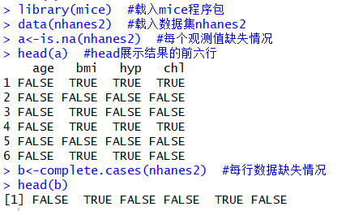
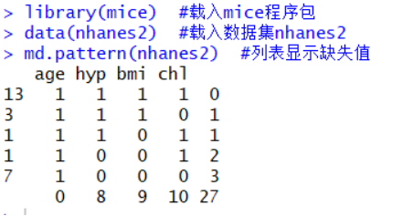
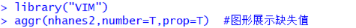
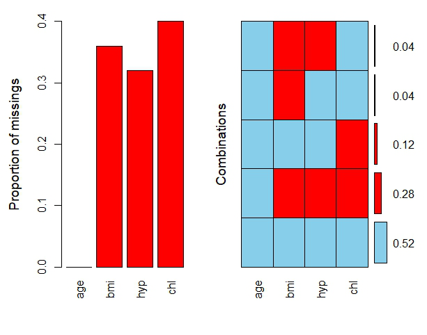

1. 函数查找缺失值
以mice包提供的nhanes2数据集为演示示例，该数据集是一个含有小规模缺失值的数据集，包括age(年龄段)、bmi(身体指数)、hyp(是否患高血压)、chl(血清胆固醇总量)四个变量，其中，age和hyp为分类变量，
bmi和chl为定量变量。
将函数is.na()和函数complete.cases()分别应用到数据集nhanes2上，运行结果如下：

2. 列表显示缺失值
以mice包提供的nhanes2数据集为演示示例，将md.pattern()函数应用到该数据集上，运行结果如下：

运行结果0表示变量的列中存在缺失值，1表示没有缺失值。除最后一行外，每一行代表一种缺失值模式；最后一行表示每个变量包含缺失值的数目；第一列表示各缺失值模式的实例数目；最后一列表示每种模式包含缺失变量的数目。
结合nhanes2数据集来看，该数据集存在五种缺失值模式；由最后一列可知，第一行中各变量均不含缺失值，代表“无缺失值”模式，第二行有一个变量含缺失值，代表“除变量chl外不含缺失值”模式，依此类推其他缺失值模式；由第一列可知，数据集中有13条记录不含缺失值，3条记录chl缺失，1条记录bmi缺失，1条记录变量bmi和hyp均含缺失值，7条记录除age外的其余三个变量均含缺失值；由最后一行可知，四个变量(age,hyp,bmi,chl)分别含缺失值数目为：0、8、9、10。因此，该数据集有13条记录不含缺失值，3+1+1+7=12条记录存在缺失值，共包含27个缺失值。
3. 图形探究缺失值
以nhanes2数据集为例，结合函数aggr()的运行结果进行分析说明。

上述代码中参数number（FALSE为默认项）表示是否展示缺失值组合模式的比例或计数，参数prop（TRUE是默认项）表示是否使用比例的形式展示缺失值和缺失值组合模式数量。当设置参数prop=F时得到的结果是缺失值和组合模式的具体数值，本例为了更好地看出缺失信息的占比，以比例的形式展现缺失值情况。运行结果如下：
